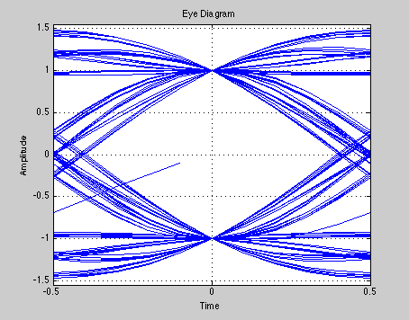

Eyediagram
Copyright 2007 Telecommunications Lab
M = 2; Fd = 1; Fs = 10; % Define the M-ary number and sampling rates. Pd = 100; % Number of points in the calculation msg_d = randint(Pd,1,M); % Random integers [0,M-1] msg_a = qammod(msg_d,M); % Modulate using QAM. % Pulse shaping with raised cosine filter. r=.5; %Roll-Off factor delay = 15; % Delay of the raised cosine filter rcv = rcosflt(msg_a,Fd,Fs,'fir/normal',r,delay); % Truncate the output of rcosflt to remove response tails. N = Fs/Fd; propdelay = delay .* N + 1; % Propagation delay of filter rcv1 = rcv(propdelay:end-(propdelay-1),:); % Truncated version % Plot the eye diagram of the resulting signal sampled and %subplot(1,1,1); h1 = eyediagram(rcv1,N,Fd,0); set(h1,'Name','Eye Diagram, Roll-Off-Factor: 0.5');grid on;